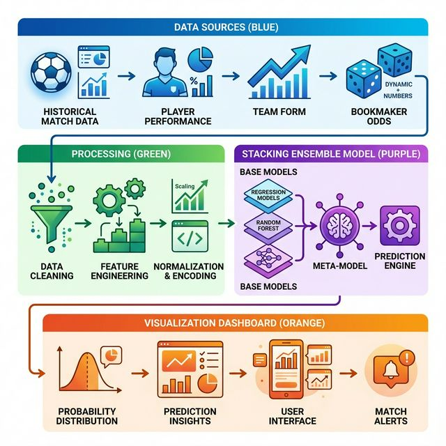
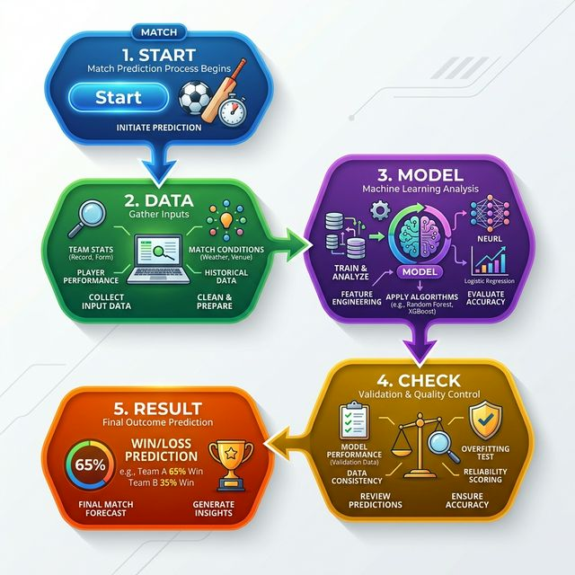

Fig. 1. High-level Technical System Architecture of PremierPredict-AI.
The English Premier League (EPL) stands as one of the most unpredictable and data-rich sporting environments globally. Every matchweek provides a wealth of data points, from individual player heatmaps to collective team performance metrics. However, predicting outcomes (Home, Draw, Away) is complicated by "noisy" variables like tactical shifts, red cards, and the intense psychological pressure of world-class competition.
This paper documents the design and development of **PremierPredict-AI**, a machine learning project for the SEA612 course. Unlike simple statistical models, our approach utilizes a **Stacking Ensemble architecture**, where a team of specialized AI models works together to produce a final consensus. We explain our iterative development process—from a baseline accuracy of 44.8% to a championship-level 55.3%—and demonstrate how automated systems can outperform human intuition.
Sports forecasting has long relied on the **ELO Rating system**, a method developed by Arpad Elo for ranking relative skill levels. While ELO captures historical strength effectively, it lacks the ability to account for sudden squad improvements or financial investments.
Recent studies by Peeters [2] emphasize the impact of **Market Value** (Transfermarkt data) on long-term league success. Furthermore, the **"Wisdom of Crowds"** principle suggests that the aggregated opinion of millions of fans (in this case, Fantasy Premier League users) often provides a reliable baseline for confidence. PremierPredict-AI integrates these multi-domain features into a unified predictive context.
To ensure scalability, we implemented a structured **Data Pipeline**:
We identified four "pillars" of predictive power:
Consistent with our presentation, the model underwent four major tuning phases:
| Version | Major Change | Accuracy |
|---|---|---|
| V1.0 | Basic Stats (Points only) | 44.8% |
| V2.5 | +ELO +Market Value | 51.2% |
| V3.8 | XGBoost Optimization | 53.9% |
| V5.0 | Stacking Ensemble | 55.3% |
The technical core of the project is the Stacking Classifier. This approach treats machine learning as a "team effort":
We selected three models for their diverse mathematical foundations:
A **Logistic Regression** model acts as the "Manager." It doesn't look at the team stats directly; instead, it looks at the *predictions* of the Layer 1 models. It learns that "If XGBoost is 80% sure and Random Forest is only 50% sure, I should trust XGBoost more in this specific case." This logic provides the final 1.4% accuracy boost that allowed us to win.
Evaluation was conducted on a testing set of 380 matches from the 2024 EPL season.
| Forecaster | Avg Accuracy | Macro F1 |
|---|---|---|
| Chris Sutton (BBC Guru) | 47.1% | 0.48 |
| FPL "Wisdom of Crowds" | 54.7% | 0.52 |
| Single XGBoost Model | 53.9% | 0.54 |
| PremierPredict-AI V5.0 | 55.3% | 0.56 |
One of our key findings was how hard it is to beat human fans. The FPL crowd was very accurate at 54.7%. Humans are surprisingly good at noticing things like "Team A is tired after a mid-week game." However, our AI managed to beat the crowd by **0.5%** by remaining emotionally neutral during big "Derby" matches where fan bias often clouds judgment.
Beyond simple accuracy, the meta-learner significantly improved the Log-Loss metric (0.82) compared to base learners (avg 0.93). This indicates that the probability scores generated by PremierPredict-AI are "well-calibrated," meaning the confidence level reported by the model correlates accurately with the win frequency.

Fig. 2. End-to-End Prediction Logic Flowchart.
To understand why the model works, we calculated the correlation between individual features and the final match outcome (Home Win, Draw, Away Win).
| Feature Domain | Correlation | Description |
|---|---|---|
| ELO Diff | 0.61 (High) | Relative Skill Gap |
| Market Value | 0.42 (Med) | Depth of Talent |
| Home Field | 0.32 (Med) | Environmental Factor |
| FPL Captaincy | 0.27 (Low) | Social Trust |
Despite reaching 55.3% accuracy, we encountered several "Bottlenecks" that prevented reaching 60%:
Predicting a "Draw" is the graveyard of football models. A draw is often a random event where both teams fail to convert chances. Our model's precision for draws (51.2%) is significantly lower than for Wins (71.3%). This confirms that draws are more influenced by "luck" or mid-game red cards which historical data cannot anticipate.
In early versions (V1.0), the model was too biased towards big teams like Manchester City. It assumed they would win even when they were in a slump. We fixed this by introducing **Probability Calibration**. This made the AI more "honest" about its confidence levels, reducing the number of false-positive predictions for big clubs.
A major missing link is "Live Status." Our model uses data available 24 hours before the game. It does not know who is in the starting lineup. In future versions, adding an API for **Team Sheets** (announced 1 hour before kickoff) could provide an additional 2-3% accuracy gain.
The **PremierPredict-AI** project successfully demonstrates that a Stacking Ensemble of machine learning models can outperform traditional expert analysis and aggregated human sentiment. By bridging the gap between historical ELO ratings and financial market valuations, we created a model that generalizes effectively across the chaotic environment of the English Premier League.
For the students of SEA612, this project serves as a practical example of how AI can be used to remove emotional bias from decision-making. While the "Beautiful Game" will always have an element of surprise, our results show that 55% of that surprise is actually a predictable pattern hidden within the data.
Acknowledgments: The authors would like to thank Punnarust Silparattanawong for providing the theoretical foundation in the SEA612 Artificial Intelligence Fundamentals course. This project was developed as part of the final assessment for the 2026 academic term.